Level 1, older clients, teaser
Level 1, older clients, 50 min. Peak: Teaser (Seated roll back with straps)
Warm up15 min
1. Footwork7 min, Reformer
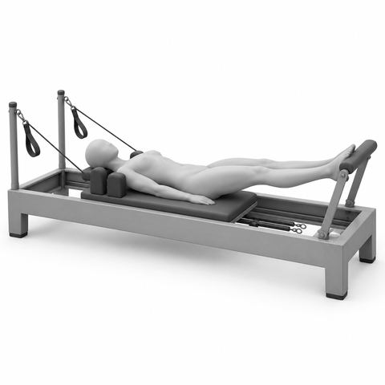
Footwork: heels, parallel2 min, x10
Heels on FB, par, hip wd; Press out to long legs, Exh; Neut pelvis, long neck

Footwork: calf stretch under the bar1 min, 3 slow holds
Legs long, heels under FB; Hold 3 breaths, lift, repeat; Soft knees if tight
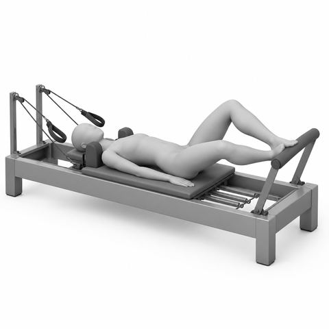
Footwork: toes, Pilates V2 min, x10
Heels together, toes apart (V); Turn out from the hips; Squeeze inner thighs out

Footwork: heels wide, parallel2 min, x10
Heels wide on FB, par; Knees over ankles; Even weight both feet
2. Bridge4 min, Reformer

Articulated bridge, feet on footbar2½ min, x6
Imp, peel spine up (art); Hold at top, long thighs; Roll down bone by bone
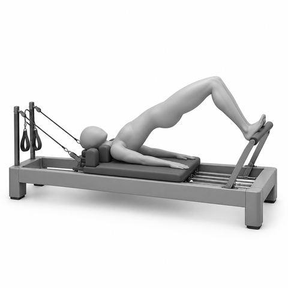
Heel bridge, feet flexed on footbar1½ min, x8
Heels on FB, toes up; Lift hips, feel hamstrings; Hips level
3. Abs and supine arms4 min, Reformer
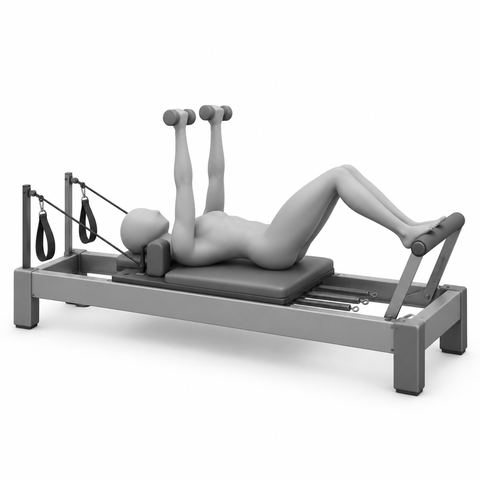
Chest press with light weights2 min, x10
Lie on carr, feet on FB; Wts at chest, press up; Lower slow, elbows wide

Chest lift, feet on footbar2 min, x8
Arches on FB, hands behind head; Exh, HNS curl up; Inh hold, Exh lower
Strength and tone19 min
4. Plank3 min, Mat
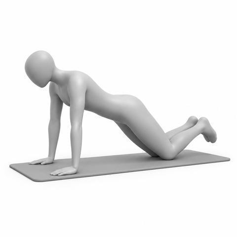
Plank on the knees1½ min, 3 holds of 20 sec
Hands under shoulders, knees down; Long line, head to knees; Breathe, hold, rest
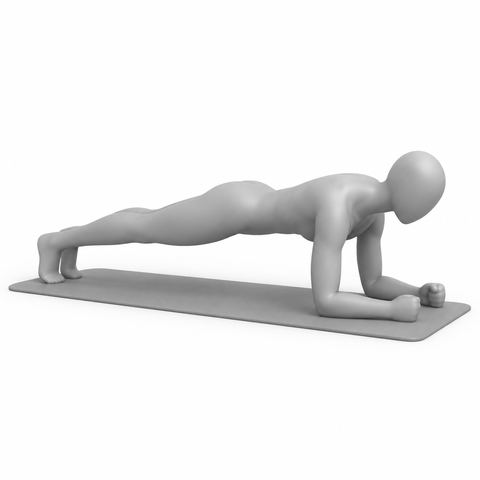
Forearm plank on the mat1½ min, 3 holds of 20 sec
Forearms down, elbows under shoulders; Knees down or long legs; Breathe, hold, rest
5. Lower body5 min, Mat
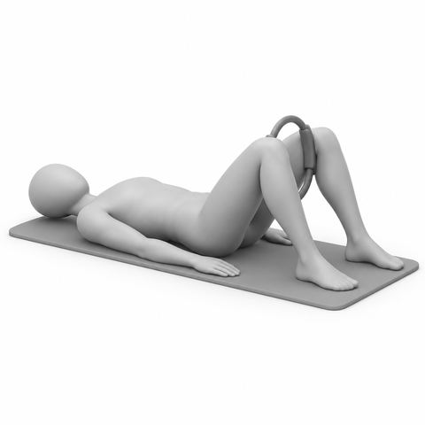
Inner thigh squeeze with magic circle2½ min, x10
Lie on back, MC between knees; Squeeze, Exh; Release halfway
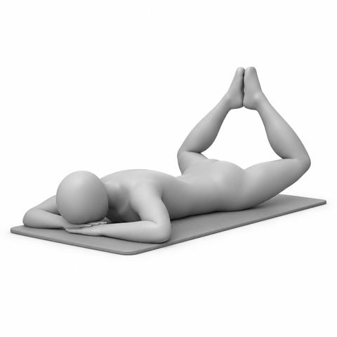
Prone heel squeeze2½ min, x10
Face down, knees wide, heels touch; Squeeze heels, Exh; Release slow
6. Upper back4 min, Reformer
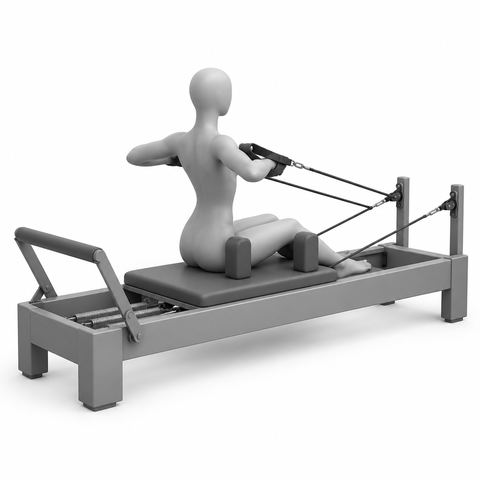
Seated rows2 min, x10
Sit tall facing straps; Pull elbows back, wide; Scaps slide down
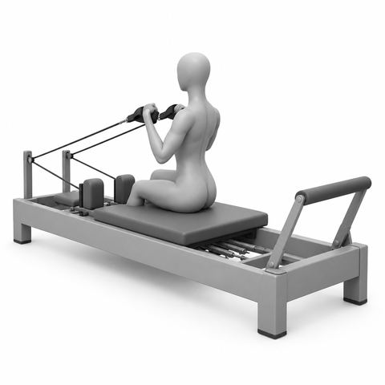
Seated biceps curl2 min, x10
Sit tall facing straps; Arms forward, palms up; Curl hands to shoulders
Second half
From minute 27. 2 equipment changes, 6 spring changes
Strength and tone, continued19 min
7. Upper front4 min, Reformer
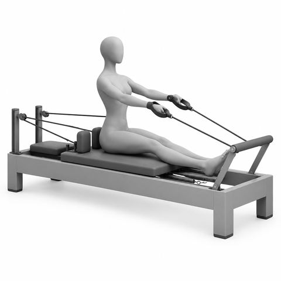
Hug a tree2 min, x10
Sit facing FB, back to straps; Arms wide, soft elbows; Hug forward, open slow
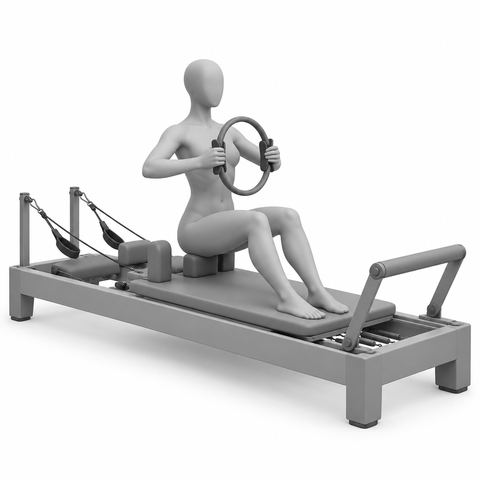
Magic circle chest press2 min, x10
Sit tall, MC at chest; Squeeze ring, Exh; Release halfway, keep lift
8. Side body and rotation3 min, Reformer
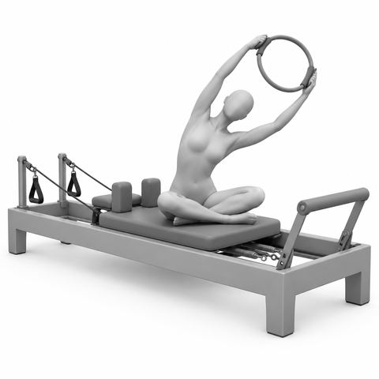
Seated side reach with magic circle1 min, x5 ea
Sit tall, MC overhead; Reach up and over to one side; Both sit bns stay down

Mermaid2 min, x4 ea
Side sit, near hand on FB; Push carr out, arm overhead; Long side bend, return
Functional11 min
9. Full body6 min, Reformer
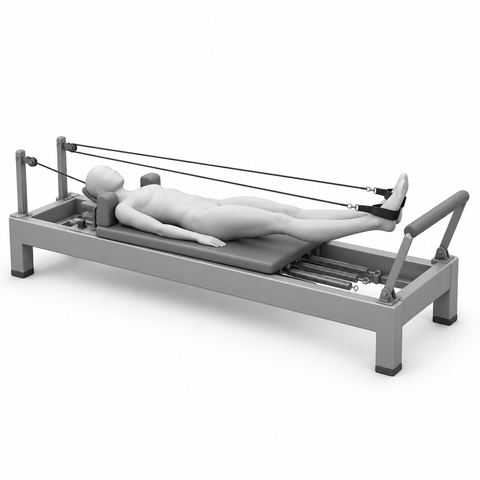
Leg lowers in straps1½ min, x8
Legs long, slight V; Lower legs, Inh; Exh, pull down to hips, up

Strap abs: frog with chest lift2 min, x8
Feet in straps, heels together; HNS, hands behind head; Press legs out, bend in

Seated roll back with straps2½ min, x6
Sit tall facing straps, hold straps; Exh, roll back to C-curve; Inh hold, Exh roll up tall
10. Back extension5 min, Reformer
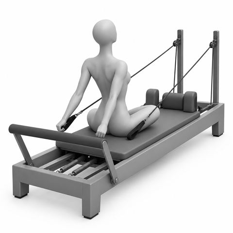
Seated back extension with the straps1½ min, x6
Sit facing straps, arms forward; Pull arms past hips, lift chest; Return tall, slow

Cat and cow on the carriage1½ min, x5
Hands and knees, hands on FB; Round up, then lengthen; Slow with breath
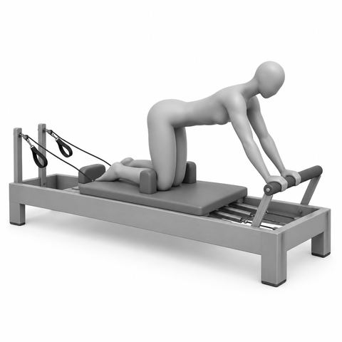
Quadruped hold on the carriage2 min, 5 slow breaths x3
Knees on carr, hands on FB; Long flat back; Tiny press back, hold, return
Lengthening5 min
11. Stretch5 min, Reformer

Standing hinge at the footbar1½ min, x6
Stand, hands on FB; Walk back, hinge to flat back; Long spine, soft knees

Figure 4 stretch, foot on footbar1½ min, 3 breaths ea
One foot on FB; Cross ankle over knee; Bend in a little, switch
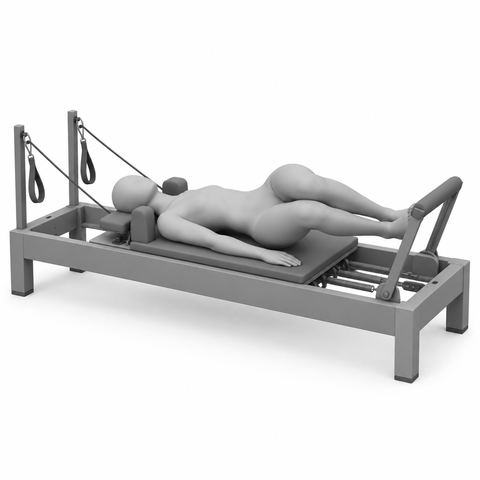
Hip rolls on the carriage2 min, x4 ea
Heels on FB, knees together; Knees drop to one side; Exh to center, switch
Key. HNS Head and shoulders lifted; FB Footbar; carr Carriage; par Parallel legs; V Pilates V, heels together, toes apart; ea Each side; x Repetitions, so x8 means 8 times; Inh Inhale; Exh Exhale; sit bns Sit bones; hip wd Hip width apart; art Articulate, one bone at a time; sec Seconds; MC Magic circle. Springs: red heavy, blue medium, yellow light. Older clients start lighter. Start at the lighter load. Add spring only if form stays clean.